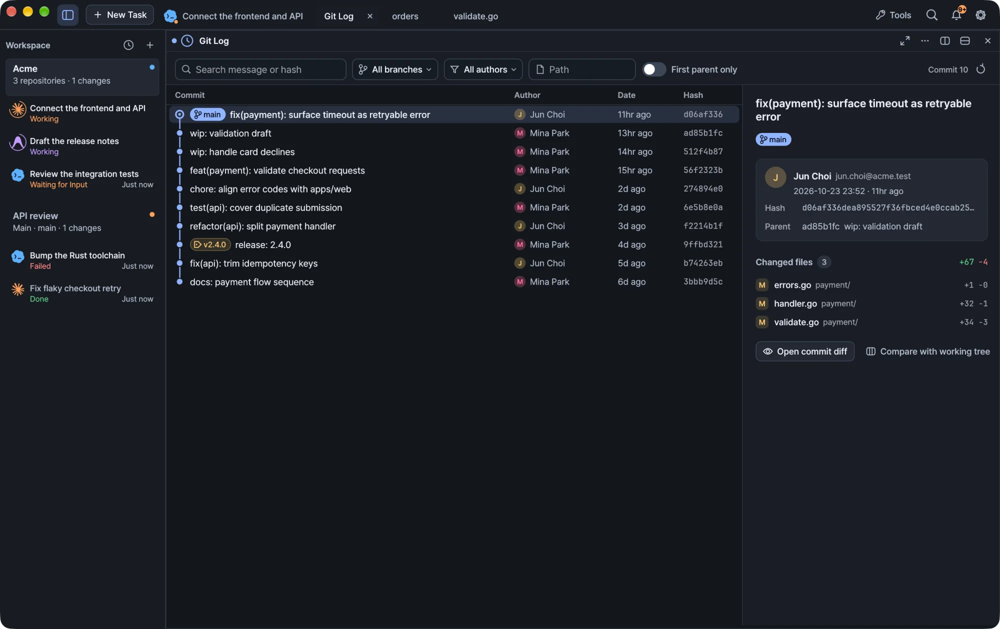

Browse commit history, open diffs, and squash, cherry-pick, drop or reword commits in the repository you select.
Kiln puts commit history, diffs and pull requests in the workspace inspector, next to your terminals. Every Git operation runs against the repository you select, so you can rewrite history safely even when a workspace spans several repositories.

Kiln running a demo workspace.
Automatic repository status checks pause in inactive workspaces. The last results stay visible, and checks resume when you return to the workspace.
Open Git tools
The right-hand workspace inspector includes Changes and GitHub. You can also open source control and GitHub from the titlebar Tools menu, which opens them alongside your current work without replacing your terminal task.
GitHub features use the GitHub CLI. Install gh and sign in with it before you use them. See Install and update.
Choose a repository
A workspace can point at a single repository or at a parent folder such as ~/dev/projects that contains several. In a multi-repository workspace, use the repository selector inside the Git and GitHub tools to choose the repository you want to work on.
Selecting a repository only changes where Git operations apply. The task's working directory stays at the workspace folder, and an agent is not moved into the repository you inspect. See Workspaces and tasks.
Warning In a multi-repository workspace, confirm the selected repository before you change history.
Browse history and diffs
Open Changes and select a repository to see its Commit history. The list is interactive right away. There is no separate edit mode.
Action
How
Select a commit
Click it
Select a range
Drag across rows, or Shift-click
Open a commit's diff
Double-click the commit
Show commit actions
Right-click a commit or a selection
Browse another branch
Use the branch filter
Open a larger view
Click the expand icon
The branch filter lets you browse another branch without checking it out. The expand icon opens the same history, with the same interactions, in a larger tab. In the multi-repository overview, the history icon beside each repository opens that larger view directly.
Press ⇧⌘L to open history. In a single-repository workspace it opens the history directly. With several repositories it opens the repository overview so you can pick one first.
Note Shortcuts on this page use macOS keys. On Windows, app shortcuts read ⌘ as Ctrl+Shift, so ⇧⌘ becomes Ctrl+Shift+Alt.
Edit a commit message
Right-click a commit on the current branch.
Choose Edit message.
Edit the message in the confirmation dialog and apply it.
If the commit is already published, the remote history needs updating too. Read the warning in the dialog before you continue.
Squash commits
Drag across commit rows, or Shift-click, to select a range.
Choose Squash from the selection actions or the context menu.
Review the target branch and the commits, then edit the combined message.
Review any shared-history warning and confirm.
Squashing works on consecutive commits in a supported linear segment of the current branch.
Tip Option-drag (Alt-drag on Windows) keeps its own behavior: it reorders commits instead of selecting a range.
Cherry-pick from another branch
Choose the source branch in the history filter.
Select the commits you want.
Choose Cherry-pick.
Kiln applies the selected changes as new commits on your current branch. The filter only changes what you are browsing. It never checks out the source branch.
Drop commits
Select one or more commits and choose Drop commits. Kiln removes their changes from the current branch by rewriting history. This is different from a revert, which adds a new commit. Review the affected range before you confirm.
Shared history and recovery
Squash, drop and cherry-pick follow the same safety steps.
Checks first. Before running, Kiln checks the worktree, branch, HEAD and remote state.
Backup ref. Kiln stores the original HEAD in a backup ref. You can find the backup information in the result details.
Shared-history warning. The review warns you when the affected commits are part of the remote default branch, or when Kiln cannot tell.
Guarded push. When you squash or drop published commits, Kiln offers to push automatically using --force-with-lease with an explicit expectation. If the remote changed in the meantime, the push refuses to overwrite it.
Server rules still apply. Branch protection on the server stays in force. Kiln does not bypass it.
Conflicts
A conflict stops the operation and offers actions to continue, skip or abort. Nothing is pushed while the operation is stopped.
Failed pushes
If the local rewrite finishes but the push fails afterwards, Kiln shows the two results separately: the local rewrite completed, and the remote update did not. The backup information stays available in the result details.
Pull requests
Open GitHub in the inspector to review pull requests for the selected repository without leaving your workspace. As with Git history, use the repository selector in a multi-repository workspace.
 Kiln
Kiln